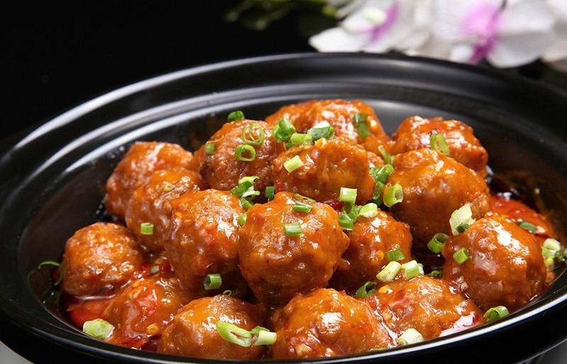

Braised meat ball in brown sauce
- Recipe NameBraised meat ball in brown sauce
- Description
Braised meat ball in brown sauce is a traditional dish in Xiangtan, Hunan Province.
- LevelHigh
- Time Needed70min
- Main Ingredient500 grams of pork filling, 50 grams of rape, 25 grams of carrots
- Auxiliary Ingredient60 grams of cooking oil, 2 tablespoons of soy sauce, 1 tablespoon of cooking wine.
- Process
1. Wash green onion and ginger and cut into fines, wash rapeseed, wash and shred carrot.
2. Mix the pork stuffing with green onions, minced ginger, starch, pepper, and soy sauce, and beat them until they are elastic to form meatballs of the same size. When chopping minced meat, follow the principle of "three points fat, seven points lean".
3. Heat half a pot of oil, pour the meatballs into the oil pan and fry until golden.
4. Leave a little cooking oil in the wok, stir-fry the rapeseed and carrot shreds, then pour the fried meatballs, add soy sauce, water, and cooking wine together to cook, simmer over medium heat for more than 10 minutes until fully cooked, thicken the starch with water. Pour bright oil on a serving plate.